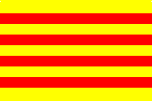

It has already been said that popular catalan songs are the pristine manifestation most beautiful of its folklore. Among these, none so deeply emotive than "El cant dels ocells". From this simple elementary melody, Wanda Landowoska said and wrote that it's "the most beautiful popular song from all over the world". At the beginning, Pau Casals in exile used to play it for himself as an hymn to the nostalgia.
He fold in love with his air somehow sad and snuggling in one of his escapes to multiples towns mainly from the French Midi, when celebrating a beneficial audition in the Cannes Casino [...]. As explained by Joan Alavedra in his biographical book about the master, the success was unexplainable and when the ovations began to decrece the violoncello got up, he approached the public and announced emoted: "'El cant dels ocells', popular catalan song".
From then on, the sober but cadenced melody, became the gift with which Casals epilogue all his recitals and even concerts which he celebrate till arrive to the United Nations.
The irradiation of "El cant dels ocells", mostly in the European musical area, has made not in few occasions, at least till where the catalan culture gets to, to consider Pau Casals as the author of this music with so much evocation power. I'm sure that the evidence of this reality would have made happy the genial artist.